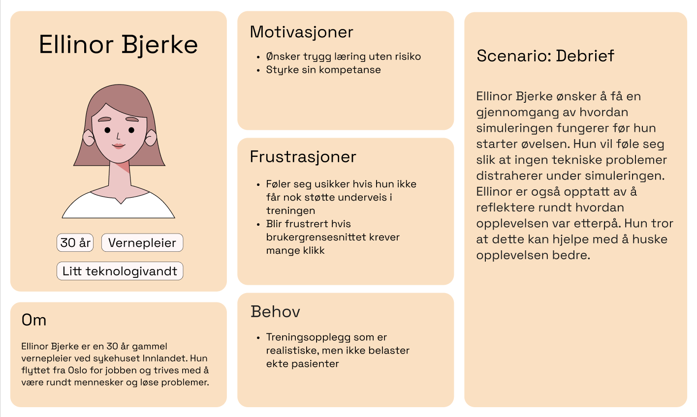
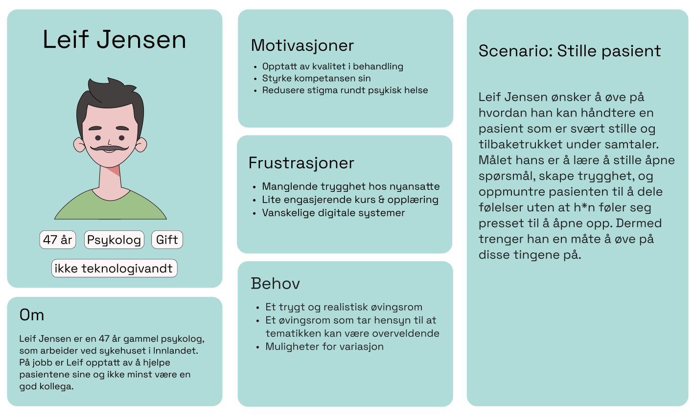
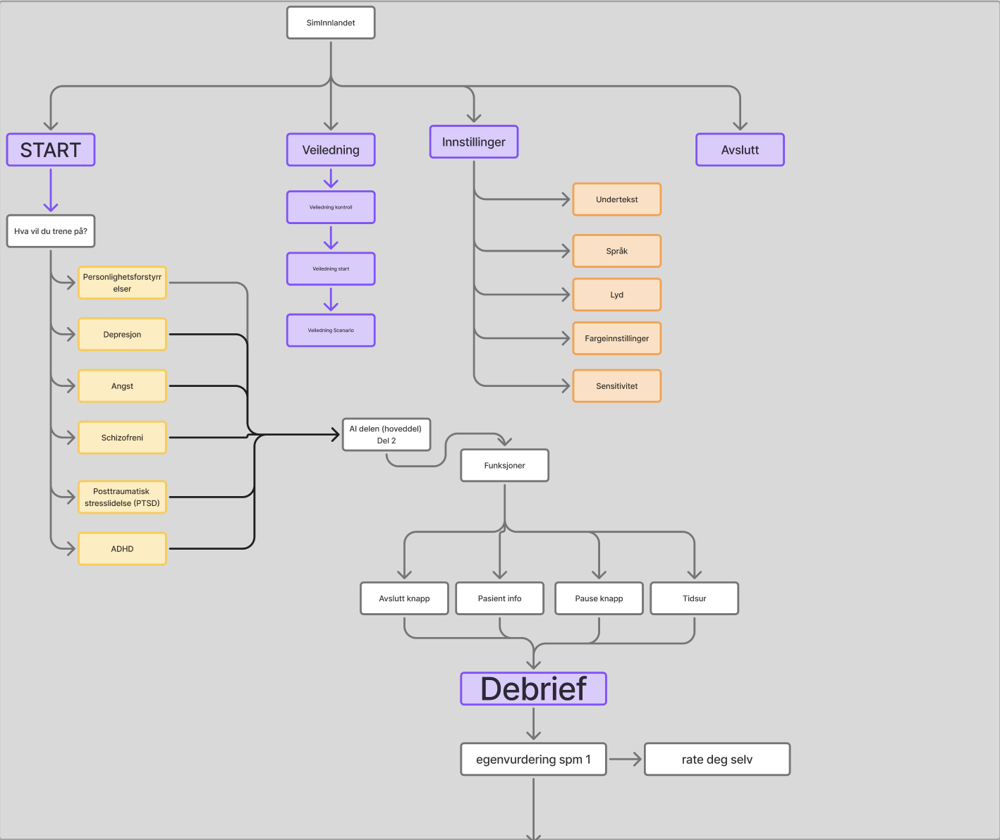
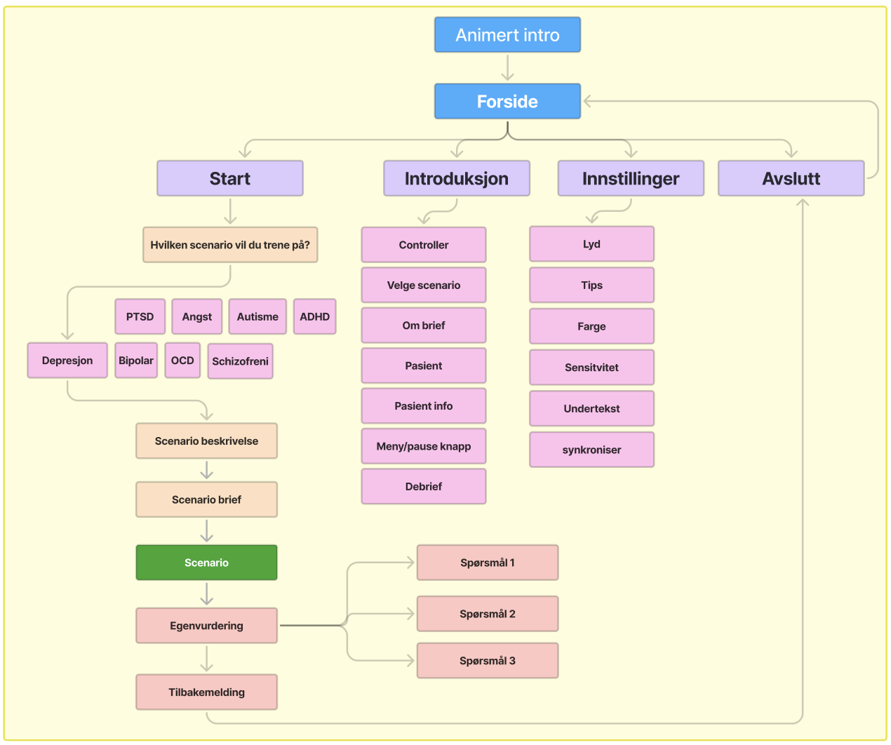

Klikk for neste bilde
🍁 I løpet av høstsemesteret designet jeg og tre andre studenter en prototype for SIMInnlandet. Sykehuset ønsket å trene ansatte ved hjelp av AI pasienter, vår oppgave var å bygge engasjerende og brukersentrert UX rundt AI scenarioene.
Designprosessens innsiktsarbeid besto av utforskning av lignende løsninger og forskning på opplæring i XR miljøer.
I tillegg til en spørsmålsrunde med SIMInnlandet, hvor vi fikk teste den allerede eksisterende VR løsningen.
Hovedfunn: VR Scenarioene trenger UX design rundt, slik at helsepersonell kan fokusere på læringen.
Løsningen må være veldig intuitive, da tekniske problemer kan hindre læring.
Personas 🧑🏭
I dette prosjektet har personas hatt en viktig rolle i arbeidet ved å være en påminner om hvem vi designer for.
Målgruppen for denne løsningen er helsepersonell i ulike aldre og med ulike spesialiseringer. Dermed måtte designforslaget
og brukeropplevelsen være tilpasset et bredt spekter av individer, som har forskjellige teknologiske ferdigheter og erfaringer.
XR løsninger kan oppleves kompliserte & tekniske, god UX er nøkkelen til å gjøre XR til et brukervennlig læringsverktøy!


Sitemap 🗺️
Her er et overblikk over strukturen i løsningen.
Det ble gjort mange justeringer og iterasjoner på sitemappet, og vi måtte gå tilbake flere ganger.
Orginalt hadde vi benyttet ordet "veiledning" i stedet for "introduksjon", SIMInnlandet kommenterte på at veiledning ofte brukes i en annen sammenheng hos deres ansatte.
Dermed måtte vi justere blant annet terminologien i løsningen.

Utkast 1

Endelig sitemap
Refleksjon 💭
Prosjektet med SIMInnlandet var veldig lærerikt, og ga oss muligheten til å bruke kreativitet og gamification prinsipper til det fulleste.
Tilbakemeldingene vi fikk underveis førte til at løsningen ble både mer engasjerende og brukervennlig.
Det var også spennende å jobbe med UX i et XR miljø, noe som også utfordret ferdighetene våre i Figma.
Selv om prosjektet resulterte i karakteren A, er det fortsatt rom for flere iterasjoner.
Vi fokuserte mest på å selve onboarding-delen av løsningen, noe som førte til at debrief-delen ikke fikk like mye oppmerksomhet.
Dermed er debrief-delen av prototypen ikke like engasjerende.
Det kunne også blitt eksperimentert mer med fargevalget i løsningen, ved å ikke bare gå utifra SIMInnlandets eksisterende fargepalett.